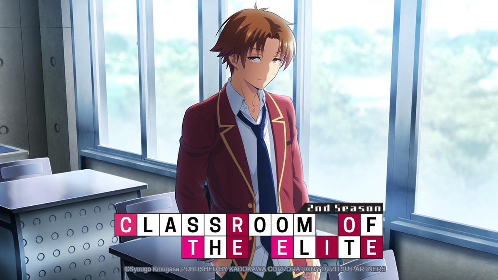
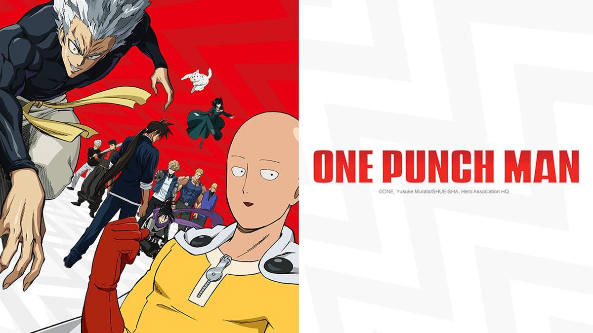
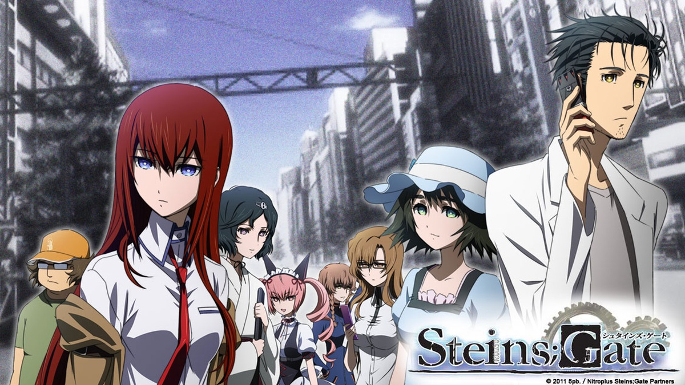

RANKINGS
Winter 2022

Demon Slayer: Entertainment District Arc
- Genre: Action, Fantasy
- Rating: 8.78/10
- Episode Number: 11 Episodes, 26 mins/each
- Summary: The devastation of the Mugen Train incident still weighs heavily on the members of the Demon Slayer Corps. Despite being given time to recover, life must go on, as the wicked never sleep: a vicious demon is terrorizing the alluring women of the Yoshiwara Entertainment District. The Sound Hashira, Tengen Uzui, and his three wives are on the case. However, when he soon loses contact with his spouses, Tengen fears the worst and enlists the help of Tanjirou Kamado, Zenitsu Agatsuma, and Inosuke Hashibira to infiltrate the district's most prominent houses and locate the depraved Upper Rank Demon. (from myanimelist.net)
Spring 2022

SPY x FAMILY
- Genre: Action, Comedy
- Rating: 8.58/10
- Episode Number: 12 Episodes, 24 mins/each
- Summary: The series follows master spy Twilight, who must disguise himself as psychiatrist Loid Forger and build a mock family in order to investigate political leader Donovan Desmond. Unbeknownst to him, his wife, Yor, is actually an assassin known as the Thorn Princess, while his daughter, Anya, has telepathic abilities.
Summer 2022

Classroom of the Elite II
- Genre: Drama
- Rating: 8.13/10
- Episode Number: 13 Episodes, 23 mins/each
- Summary: Set in the prestigious national high school "Tokyo Metropolitan Advanced Nurturing School" established by the Japanese government, the story around a class "Class A" that can advance almost 100% to the desired path after graduation.
Fall 2022

Chainsaw Man
- Genre: Action, Fantasy
- Rating: 8.54/10
- Episode Number: 12 Episodes, 24 mins/each
- Summary: Following a betrayal, a young man left for dead is reborn as a powerful devil-human hybrid after merging with his pet devil and is soon enlisted into an organization dedicated to hunting devils.

Attack on Titan
- Genre: Action, Drama, Suspense
- Rating: 8.54/10
- Episode Number: 25 Episodes, 24 mins/each
- Summary: Centuries ago, mankind was slaughtered to near extinction by monstrous humanoid creatures called Titans, forcing humans to hide in fear behind enormous concentric walls. What makes these giants truly terrifying is that their taste for human flesh is not born out of hunger but what appears to be out of pleasure. To ensure their survival, the remnants of humanity began living within defensive barriers, resulting in one hundred years without a single titan encounter. However, that fragile calm is soon shattered when a colossal Titan manages to breach the supposedly impregnable outer wall, reigniting the fight for survival against the man-eating abominations.
After witnessing a horrific personal loss at the hands of the invading creatures, Eren Yeager dedicates his life to their eradication by enlisting into the Survey Corps, an elite military unit that combats the merciless humanoids outside the protection of the walls. Eren, his adopted sister Mikasa Ackerman, and his childhood friend Armin Arlert join the brutal war against the Titans and race to discover a way of defeating them before the last walls are breached.

Death Note
- Genre: Supernatural, Suspense
- Rating: 8.62/10
- Episode Number: 37 Episodes, 23 mins/each
- Summary: Brutal murders, petty thefts, and senseless violence pollute the human world. In contrast, the realm of death gods is a humdrum, unchanging gambling den. The ingenious 17-year-old Japanese student Light Yagami and sadistic god of death Ryuk share one belief: their worlds are rotten.
For his own amusement, Ryuk drops his Death Note into the human world. Light stumbles upon it, deeming the first of its rules ridiculous: the human whose name is written in this note shall die. However, the temptation is too great, and Light experiments by writing a felon's name, which disturbingly enacts his first murder.
Aware of the terrifying godlike power that has fallen into his hands, Light—under the alias Kira—follows his wicked sense of justice with the ultimate goal of cleansing the world of all evil-doers. The meticulous mastermind detective L is already on his trail, but as Light's brilliance rivals L's, the grand chase for Kira turns into an intense battle of wits that can only end when one of them is dead.

Fullmetal Alchemist: Brotherhood
- Genre: Action, Adventure, Drama, Fantasy
- Rating: 9.10/10
- Episode Number: 64 Episopdes, 24 mins/each
- Summary: After a horrific alchemy experiment goes wrong in the Elric household, brothers Edward and Alphonse are left in a catastrophic new reality. Ignoring the alchemical principle banning human transmutation, the boys attempted to bring their recently deceased mother back to life. Instead, they suffered brutal personal loss: Alphonse's body disintegrated while Edward lost a leg and then sacrificed an arm to keep Alphonse's soul in the physical realm by binding it to a hulking suit of armor.
The brothers are rescued by their neighbor Pinako Rockbell and her granddaughter Winry. Known as a bio-mechanical engineering prodigy, Winry creates prosthetic limbs for Edward by utilizing "automail," a tough, versatile metal used in robots and combat armor. After years of training, the Elric brothers set off on a quest to restore their bodies by locating the Philosopher's Stone—a powerful gem that allows an alchemist to defy the traditional laws of Equivalent Exchange.
As Edward becomes an infamous alchemist and gains the nickname "Fullmetal," the boys' journey embroils them in a growing conspiracy that threatens the fate of the world.

One Punch Man
- Genre: Action, Comedy
- Rating: 8.50/10
- Episode Number: 12 Episodes, 24 mins/each
- Summary: The seemingly unimpressive Saitama has a rather unique hobby: being a hero. In order to pursue his childhood dream, Saitama relentlessly trained for three years, losing all of his hair in the process. Now, Saitama is so powerful, he can defeat any enemy with just one punch. However, having no one capable of matching his strength has led Saitama to an unexpected problem—he is no longer able to enjoy the thrill of battling and has become quite bored.
One day, Saitama catches the attention of 19-year-old cyborg Genos, who witnesses his power and wishes to become Saitama's disciple. Genos proposes that the two join the Hero Association in order to become certified heroes that will be recognized for their positive contributions to society. Saitama, who is shocked that no one knows who he is, quickly agrees. Meeting new allies and taking on new foes, Saitama embarks on a new journey as a member of the Hero Association to experience the excitement of battle he once felt.

Sword Art Online
- Genre: Action, Adventure, Fantasy, Romance
- Rating: 7.20/10
- Episode Number: 25 Episodes, 23 mins/each
- Summary: Ever since the release of the innovative NerveGear, gamers from all around the globe have been given the opportunity to experience a completely immersive virtual reality. Sword Art Online (SAO), one of the most recent games on the console, offers a gateway into the wondrous world of Aincrad, a vivid, medieval landscape where users can do anything within the limits of imagination. With the release of this worldwide sensation, gaming has never felt more lifelike.
However, the idyllic fantasy rapidly becomes a brutal nightmare when SAO's creator traps thousands of players inside the game. The "log-out" function has been removed, with the only method of escape involving beating all of Aincrad's one hundred increasingly difficult levels. Adding to the struggle, any in-game death becomes permanent, ending the player's life in the real world.
While Kazuto "Kirito" Kirigaya was fortunate enough to be a beta-tester for the game, he quickly finds that despite his advantages, he cannot overcome SAO's challenges alone. Teaming up with Asuna Yuuki and other talented players, Kirito makes an effort to face the seemingly insurmountable trials head-on. But with difficult bosses and threatening dark cults impeding his progress, Kirito finds that such tasks are much easier said than done.
Fullmetal Alchemist: Brotherhood
- Genre: Action, Adventure, Drama, Fantasy
- Rating: 9.10/10
- Episode Number: 64 Episopdes, 24 mins/each
- Summary: After a horrific alchemy experiment goes wrong in the Elric household, brothers Edward and Alphonse are left in a catastrophic new reality. Ignoring the alchemical principle banning human transmutation, the boys attempted to bring their recently deceased mother back to life. Instead, they suffered brutal personal loss: Alphonse's body disintegrated while Edward lost a leg and then sacrificed an arm to keep Alphonse's soul in the physical realm by binding it to a hulking suit of armor.
The brothers are rescued by their neighbor Pinako Rockbell and her granddaughter Winry. Known as a bio-mechanical engineering prodigy, Winry creates prosthetic limbs for Edward by utilizing "automail," a tough, versatile metal used in robots and combat armor. After years of training, the Elric brothers set off on a quest to restore their bodies by locating the Philosopher's Stone—a powerful gem that allows an alchemist to defy the traditional laws of Equivalent Exchange.
As Edward becomes an infamous alchemist and gains the nickname "Fullmetal," the boys' journey embroils them in a growing conspiracy that threatens the fate of the world.

One Piece
- Genre: Action, Adventure, Fantasy
- Rating: 8.71/10
- Episode Number: Currently Airing, 24 mins/each
- Summary: Barely surviving in a barrel after passing through a terrible whirlpool at sea, carefree Monkey D. Luffy ends up aboard a ship under attack by fearsome pirates. Despite being a naive-looking teenager, he is not to be underestimated. Unmatched in battle, Luffy is a pirate himself who resolutely pursues the coveted One Piece treasure and the King of the Pirates title that comes with it.
The late King of the Pirates, Gol D. Roger, stirred up the world before his death by disclosing the whereabouts of his hoard of riches and daring everyone to obtain it. Ever since then, countless powerful pirates have sailed dangerous seas for the prized One Piece only to never return. Although Luffy lacks a crew and a proper ship, he is endowed with a superhuman ability and an unbreakable spirit that make him not only a formidable adversary but also an inspiration to many.
As he faces numerous challenges with a big smile on his face, Luffy gathers one-of-a-kind companions to join him in his ambitious endeavor, together embracing perils and wonders on their once-in-a-lifetime adventure.

Hunter x Hunter (2011)
- Genre: Action, Adventure, Fantasy
- Rating: 9.04/10
- Episode Number: 148 Episodes, 23 mins/each
- Summary: Hunters devote themselves to accomplishing hazardous tasks, all from traversing the world's uncharted territories to locating rare items and monsters. Before becoming a Hunter, one must pass the Hunter Examination—a high-risk selection process in which most applicants end up handicapped or worse, deceased.
Ambitious participants who challenge the notorious exam carry their own reason. What drives 12-year-old Gon Freecss is finding Ging, his father and a Hunter himself. Believing that he will meet his father by becoming a Hunter, Gon takes the first step to walk the same path.
During the Hunter Examination, Gon befriends the medical student Leorio Paladiknight, the vindictive Kurapika, and ex-assassin Killua Zoldyck. While their motives vastly differ from each other, they band together for a common goal and begin to venture into a perilous world.

Steins;Gate
- Genre: Drama, Sci-Fi, Suspense
- Rating: 9.07/10
- Episode Number: 24 Episodes, 24 mins/each
- Summary: Eccentric scientist Rintarou Okabe has a never-ending thirst for scientific exploration. Together with his ditzy but well-meaning friend Mayuri Shiina and his roommate Itaru Hashida, Rintarou founds the Future Gadget Laboratory in the hopes of creating technological innovations that baffle the human psyche. Despite claims of grandeur, the only notable "gadget" the trio have created is a microwave that has the mystifying power to turn bananas into green goo.
However, when Rintarou decides to attend neuroscientist Kurisu Makise's conference on time travel, he experiences a series of strange events that lead him to believe that there is more to the "Phone Microwave" gadget than meets the eye. Apparently able to send text messages into the past using the microwave, Rintarou dabbles further with the "time machine," attracting the ire and attention of the mysterious organization SERN.
Due to the novel discovery, Rintarou and his friends find themselves in an ever-present danger. As he works to mitigate the damage his invention has caused to the timeline, he is not only fighting a battle to save his loved ones, but also one against his degrading sanity.

Death Note
- Genre: Supernatural, Suspense
- Rating: 8.62/10
- Episode Number: 37 Episodes, 23 mins/each
- Summary: Brutal murders, petty thefts, and senseless violence pollute the human world. In contrast, the realm of death gods is a humdrum, unchanging gambling den. The ingenious 17-year-old Japanese student Light Yagami and sadistic god of death Ryuk share one belief: their worlds are rotten.
For his own amusement, Ryuk drops his Death Note into the human world. Light stumbles upon it, deeming the first of its rules ridiculous: the human whose name is written in this note shall die. However, the temptation is too great, and Light experiments by writing a felon's name, which disturbingly enacts his first murder.
Aware of the terrifying godlike power that has fallen into his hands, Light—under the alias Kira—follows his wicked sense of justice with the ultimate goal of cleansing the world of all evil-doers. The meticulous mastermind detective L is already on his trail, but as Light's brilliance rivals L's, the grand chase for Kira turns into an intense battle of wits that can only end when one of them is dead.